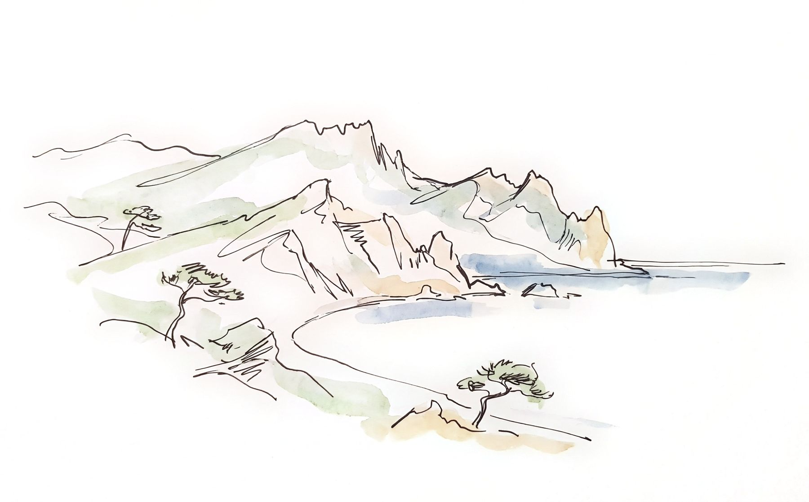

Talks & media
Lectures, courses, and public work
Bringing Crimean Tatar history and culture to audiences beyond academia, from university lectures to podcasts and a public reconstruction of a wedding rite.

Invited lectures and workshops
- Oct 2026Ethnography as Care: Knowing, Silence, and Responsibility under OccupationTransnational Relations of Care: Ukraine and Beyond · Invisible University for Ukraine / University of Fribourg
- Mar 2026I Know, I Do Not Write: Anthropology in Contexts of ViolenceWorkshop facilitator · Where Silence Speaks: (In)audibility as a Cultural Phenomenon and Scholarly Challenge in Eastern and South-Eastern Europe · University of Basel / URIS, Basel
- Jun 2024Imagining the Lost Home: Material Losses and Displacement in Modern Crimean Tatar IdentityPublic lecture · Anthropology Field School “Inheritance”, Criț, Brașov County, Romania · Institute of Social Anthropology, University of Basel
- Dec 2023Belonging to Land and Identity among Crimean Tatars after RepatriationURIS lecture series “Geschichte der Ukraine seit 1991” · University of Basel
- May 2023Parallel Worship in Local Religious Sites in CrimeaMultifaith Ukraine Webinar · Orthodox Christian Studies Center, Fordham University
- Apr 2023Collective Memory and Moral Economy in the Land Disputes in CrimeaColloquium · Institute of Social Anthropology, University of Basel
Open online courses
Video, radio, podcasts, press
- 2025Interview“Crimean Tatar cuisine is part of Ukrainians’ cultural heritage”Crimean Tatar Resource Center · in Ukrainian
- 2022PodcastRitual food in the Crimean Tatar weddingNV Podcasts, “Їли колись” · in Ukrainian
- 2020VideoTraditional culture of the Crimean Tatars: eclecticism and multiculturalism in Crimea“Історія з м’ясом” #125, SKRYPIN.UA · in Ukrainian
- 2020VideoOur Crimea: Crimean Tatar stories of repatriation“Історія з м’ясом” #105, SKRYPIN.UA · in Ukrainian
- 2019RadioCrimean Tatar history told through cuisineRadio Krym.Realii (RFE/RL) · in Ukrainian
- 2017Op-ed“Why the country needs anthropologists”With Julia Buyskykh · Uriadovyi Kurier · in Ukrainian
- 2015Public eventQına gecesi (henna night): reconstruction of the pre-wedding riteScript and direction · Ivan Honchar Museum, Kyiv